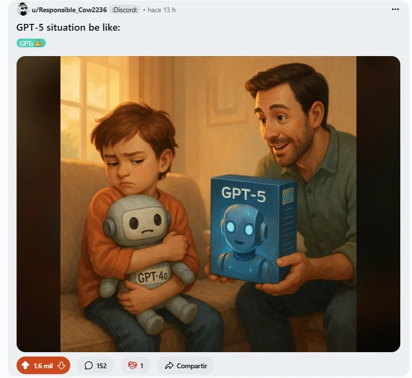

estrategIA #98 ·
El robot nuevo no sustituye al querido
El contexto
Tras el lanzamiento de GPT-5, algunos usuarios reclamaban volver a GPT-4o porque lo sentían más cercano. La newsletter compartió esta imagen de otro autor para mostrar ese apego: el niño sigue abrazando al robot conocido aunque le ofrezcan uno nuevo.
Publicado en: estrategIA #98 - GPT-5 lleva el razonamiento al gran público en un lanzamiento lleno de baches
Leer el texto de la imagen
u/Responsible_Cow2236 · :Discord: · hace 13 h GPT-5 situation be like: GPTs 💩 GPT-5 GPT-4o 1,6 mil 152 1 Compartir
La newsletter identifica esta pieza como ajena a estrategIA. La captura muestra la publicación de u/Responsible_Cow2236 en Reddit; no acredita por sí sola la autoría original.